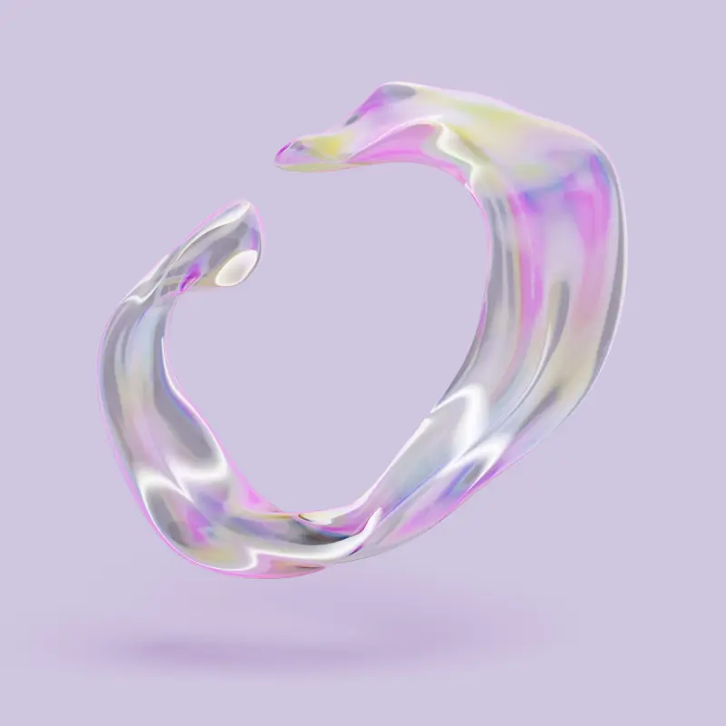
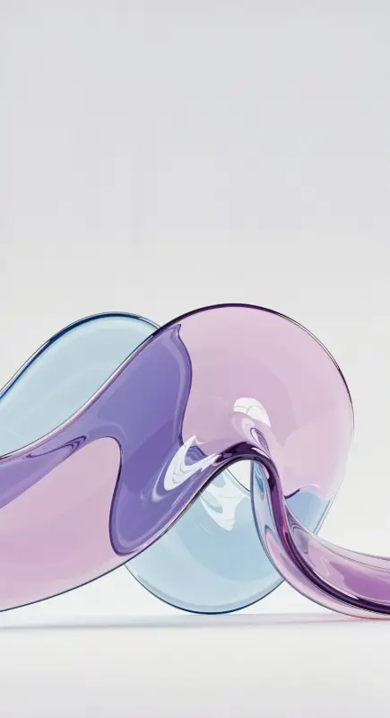

Convierte conocimiento en
decisiones.
// gobernanza de IA, sin ruido
Firma 1:1 — feed / anuncio
El sistema piensa
con
tu organización, no por encima de ella.
simonthinks.ai
Declaración 1:1 — cita
Conocimiento que se vuelve
acción.
// reel · 9:16
Historia 9:16 — reel
Gobernanza de IA
Decisiones reales
simonthinks.ai
Lockup 9:16 — apertura

Decide con
evidencia
, no con ruido.
// contexto en cada decisión
Retrato 4:5 — feed
Cada decisión, conectada a su
contexto.
// loop ambiente
Loop 1:1 — ambiente